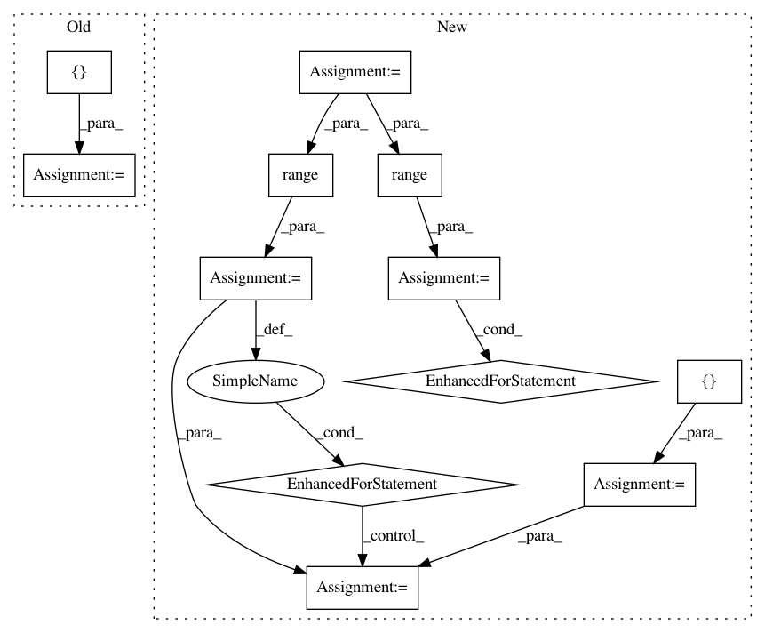

9a3e9d21273da7ae40da9f70cb6df1b077b08105,tf_agents/networks/actor_distribution_network_test.py,ActorDistributionNetworkTest,testDropoutFCLayersWithConv,#ActorDistributionNetworkTest#Any#,117
Before Change
mode2 = action_distributions2.mode()
self.evaluate(tf.compat.v1.global_variables_initializer())
mode1, mode2 = self.evaluate([mode1, mode2])
if training:
self.assertGreater(np.linalg.norm(mode1 - mode2), 0)
else:
After Change
fc_layer_params=[5],
dropout_layer_params=[0.5])
modes = []
num_modes = 10
for _ in range(num_modes):
action_distributions, _ = net(
time_step.observation, time_step.step_type, (), training=training)
modes.append(action_distributions.mode())
self.evaluate(tf.compat.v1.global_variables_initializer())
modes = self.evaluate(modes)
modes_differ = False
for i in range(num_modes):
for j in range(i+1, num_modes):
modes_differ = np.linalg.norm(modes[i] - modes[j]) > 1e-6
if modes_differ:
break
self.assertEqual(training, modes_differ)
if __name__ == "__main__":
In pattern: SUPERPATTERN
Frequency: 3
Non-data size: 12
Instances
Project Name: tensorflow/agents
Commit Name: 9a3e9d21273da7ae40da9f70cb6df1b077b08105
Time: 2019-12-05
Author: kbanoop@google.com
File Name: tf_agents/networks/actor_distribution_network_test.py
Class Name: ActorDistributionNetworkTest
Method Name: testDropoutFCLayersWithConv
Project Name: flow-project/flow
Commit Name: 67f6d47d9e61f28d455319c868c38fbc11e73366
Time: 2018-02-22
Author: eugenevinitsky@wirelessprvnat-172-16-134-167.near.illinois.edu
File Name: flow/scenarios/bridge_toll/gen.py
Class Name: BBTollGenerator
Method Name: specify_connections
Project Name: studioml/studio
Commit Name: 3e3bc98dab77e3b793504d9025e272ec5ee1d69a
Time: 2017-09-12
Author: peter.zhokhov@sentient.ai
File Name: util/completion_service_test.py
Class Name: CompletionServiceTest
Method Name: test_two_experiments